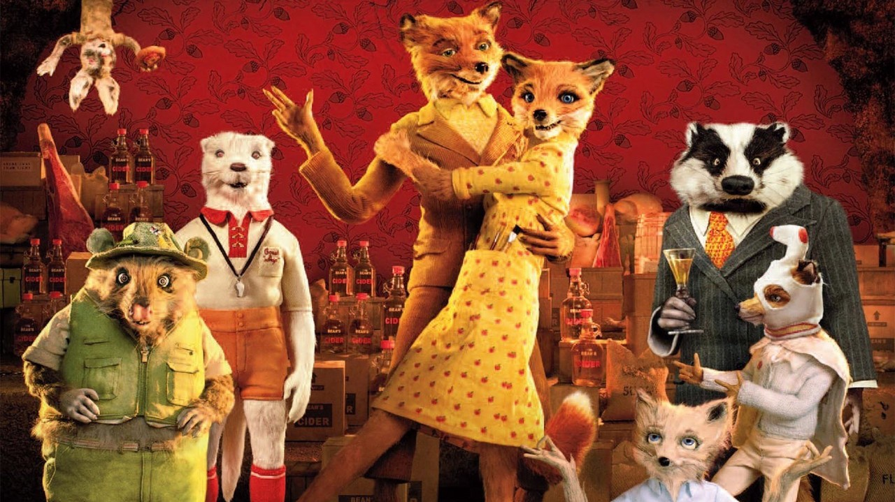

About Fantastic Mr. Fox
While raiding Berk's Squab Farm, Mr. Fox triggers a fox trap caging himself along with his wife Felicity. Felicity reveals to her husband that she is pregnant and pleads with him to find a safer job if they escape, and he reluctantly agrees. Two human years (12 fox years) later, the Foxes and their sullen son Ash are living in a hole in rural England. Mr. Fox, now a newspaper columnist, feels unhappy with his life and moves the family into a better home inside a tree, ignoring the warnings of his lawyer, Clive Badger, about how dangerous the area is for foxes due to its proximity to facilities run by three feared farmers: the fat Walter Boggis (a chicken farmer who eats three boiled chickens for breakfast, lunch, supper and dessert), the short Nathan Bunce (a duck and goose farmer who eats doughnuts stuffed with mashed goose livers), and the lean Franklin Bean (a turkey and apple farmer who drinks strong cider made from his own apples).
Mr. Fox and All His Friends
Mr. Fox's Characteristics
- He's a wild animal.
- He's different.
- He doesn't want to live in a hole anymore.
- He has a master plan.
Mr. Fox's Friends
Mr. Fox is friends with all the animals. His best friends are Badger and Kylie. Click on the links below to read more about his friends.